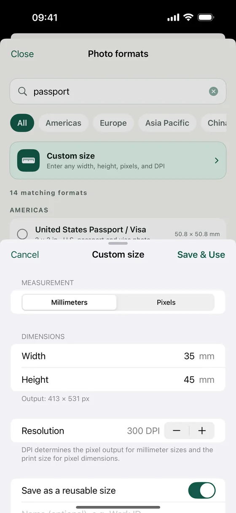

Illustrated guide
U.S., UK and Canadian passport photo sizes and how to check them
A U.S. printed passport photo is square. A UK printed photo is taller, and a Canadian printed photo is larger again. Compare the dimensions below and use IDMint to locate the matching reference on iPhone.
Passport photo sizes at a glance
| Application | Dimensions | Official instructions |
|---|---|---|
| United States · printed | 2 × 2 in (about 51 × 51 mm) | U.S. State Department |
| United Kingdom · printed | 35 × 45 mm | GOV.UK printed photos |
| United Kingdom · online | At least 600 × 750 px | GOV.UK digital photos |
| Canada · printed | 50 × 70 mm | Government of Canada |
1. Start with the country and application type
Check your passport authority’s instructions before taking or editing a photo. A printed photo and a digital upload can have different sizes and submission rules.
Open IDMint’s format list and search for your country. Select the relevant printed or online reference when both are available.

2. If editing is permitted, use the right units
Use the listed reference or enter an exact custom width and height. Printed sizes are often specified in inches or millimeters, while digital uploads use pixels.
Use the reference for planning or previewing size. Only crop or export a photo for submission if your authority’s instructions allow it. Don’t assume that changing the background, retouching the image or taking it yourself is permitted.


3. Check the rules again before you submit
U.S. passport guidance restricts digital alterations. UK digital applicants should check the required framing, file size and whether they need a photo code. Canada generally requires a commercial photographer or studio to take the photo in person.
The size in the app is a reference. Check the authority’s current instructions, especially if it requires a photographer, a stamp, a digital code or an original file.